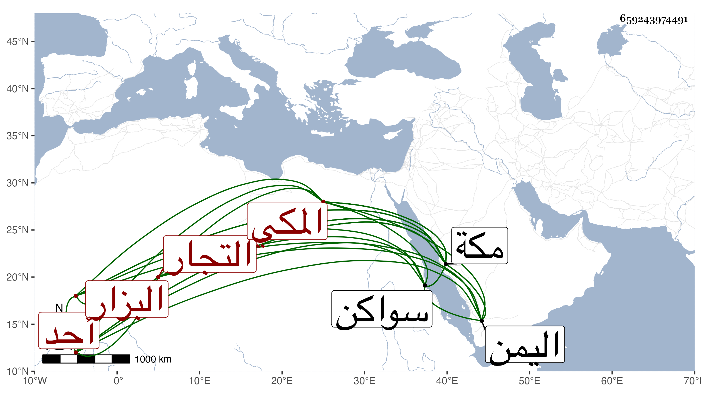

0902Sakhawi.DawLamic.ITO20230111-ara1.EIS1600.659243974491
Biography ID: 659243974491
473
عوض بن موسى المكي البزار . أحد التجار المعتبرين . ممن أجاز له في سنة خمس وثمانمائة العراقي والهيثمي وابن صديق والزين المراغي وعائشة ابنة ابن عبد الهادي في آخرين وكان بزازا بدار الأمارة ثم ترك وسافر لسواكن ولبلاد اليمن للتكسب ثم ترك أيضا وصار يتسبب بمكة ، وصاهر عطية بن أحمد بن جار الله ابن زايد على ابنته هدية فولدت له محمدا الذي ورثه وأذهب ميراثه في أسرع وقت وصار يتكدى في هيئة رثة ، ومات صاحب الترجمة بمكة في ليلة الجمعة سابع المحرم سنة ست وأربعين ودفن تحت رجلي اليافعي ذكره ابن فهد وقال : ما علمته حدث ولا أجاز .
